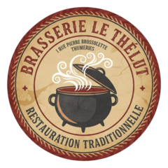

L'association
Une jeune asso familiale qui fait danser Thumeries depuis 2026.
Prism Up est née d'une passion commune pour la danse, portée par les membres d'une même famille. Notre envie : réunir tous les âges autour de la danse urbaine, dans une ambiance chaleureuse et bienveillante.
Lire la suite
Débutant ou danseur confirmé, chacun trouve sa place pour apprendre, progresser, s'exprimer et surtout prendre du plaisir.
Au-delà des cours, nous voulons créer des moments d'échange entre les générations, en favorisant l'esprit d'équipe et le respect de chacun.
Janvier 2026Création de l'association
Street jazz · Hip hopEt autres styles urbains
2 salles à Thumeries
P. Legrain ·
Salle des assos
L'équipe

Les profs
Dans la presse
La Voix du Nord · 7 septembre 2026
« Une nouvelle asso pétillante pour apprendre les danses urbaines »
Lire l'article →Nos partenaires
